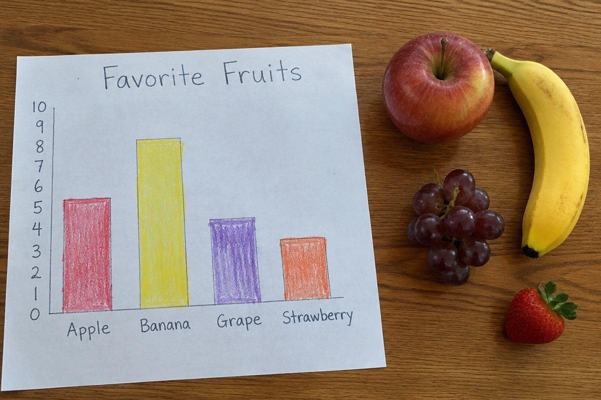

조사한 내용을 한눈에 보려면 어떻게 할까?

우리 반 친구들이 가장 좋아하는 과일은 무엇일까요? 친구들에게 물어본 결과를 표와 그래프로 정리하면 한눈에 알 수 있어요.
자료를 모아 표로 정리해요
궁금한 것을 정하고 친구들에게 물어 모은 것을 자료라고 해요. 손을 들게 하거나 붙임 딱지를 붙이게 해서 모을 수 있어요.
모은 자료는 항목별로 수를 세어 표로 정리해요. 표에는 합계를 적는 칸도 있어서 모두 몇 명인지 바로 알 수 있어요.
사과 7명, 바나나 5명, 딸기 9명, 포도 4명 → 합계 25명
그림그래프로 나타내요
그림그래프는 수량을 그림으로 나타낸 그래프예요. 큰 그림과 작은 그림을 정해 큰 수도 간단하게 나타낼 수 있어요.
큰 사과 그림이 10상자, 작은 사과 그림이 1상자를 뜻한다면 32상자는 큰 그림 3개와 작은 그림 2개로 그려요.
큰 그림 = 10, 작은 그림 = 1 → 32는 큰 그림 3개 + 작은 그림 2개
막대그래프로 나타내요
막대그래프는 수량을 막대의 길이로 나타낸 그래프예요. 막대가 길수록 수가 많아서 크기를 비교하기 쉬워요.
그래프를 그릴 때는 가로와 세로에 무엇을 나타낼지 정하고, 눈금 한 칸이 몇을 나타낼지 정한 뒤 막대를 그려요. 제목도 꼭 붙여요.
세로 눈금 한 칸이 1명일 때, 딸기는 9칸, 포도는 4칸 높이의 막대
이렇게 풀어요: 그래프 읽기
① 제목을 보고 무엇을 조사했는지 알아봐요. ② 눈금 한 칸이 얼마인지 확인해요. ③ 막대 길이나 그림 수를 세어 수를 읽어요.
가장 많은 것과 가장 적은 것을 찾고, 차이도 구할 수 있어요. 딸기(9명)와 포도(4명)의 차이는 9 − 4 = 5명이에요.
가장 많은 과일: 딸기 9명, 가장 적은 과일: 포도 4명, 차이 5명
핵심 낱말
- 자료
- 조사해서 모은 내용
- 표
- 항목과 수를 칸에 나누어 정리한 것
- 그림그래프
- 수량을 그림으로 나타낸 그래프
- 막대그래프
- 수량을 막대의 길이로 나타낸 그래프
- 눈금
- 그래프에서 수를 읽을 수 있게 그은 일정한 간격의 표시
한 줄 정리
- 조사한 자료는 표로 정리하면 합계를 쉽게 알 수 있어요.
- 그림그래프는 그림으로, 막대그래프는 막대의 길이로 수량을 나타내요.
- 그래프를 읽을 때는 눈금 한 칸이나 그림 하나가 얼마인지 먼저 확인해요.